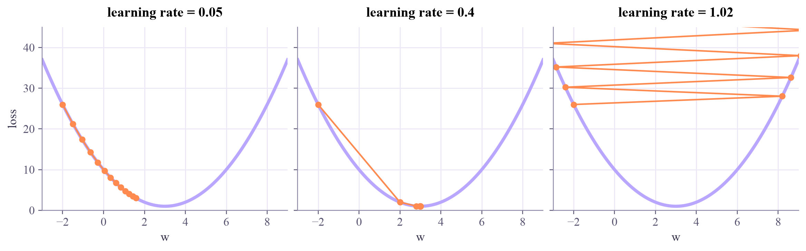
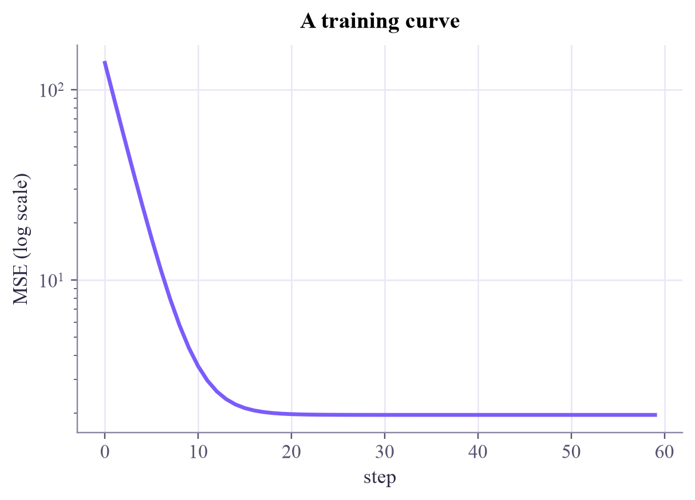

step 0: w = -2.000 loss = 26.000 slope = -10.000 step 1: w = -1.000 loss = 17.000 slope = -8.000 step 2: w = -0.200 loss = 11.240 slope = -6.400 step 3: w = 0.440 loss = 7.554 slope = -5.120 step 4: w = 0.952 loss = 5.194 slope = -4.096 step 5: w = 1.362 loss = 3.684 slope = -3.277 step 6: w = 1.689 loss = 2.718 slope = -2.621 step 7: w = 1.951 loss = 2.100 slope = -2.097
Machine Learning
 about 11 min
about 11 min ml-w2d2.ipynb
ml-w2d2.ipynb
Gradient descent
The one algorithm behind nearly all of modern machine learning, quantum included: feel the slope, step downhill, repeat.
In this lesson you will
- Explain the update rule in words
- See what happens when the learning rate is too small or too large
- Train the pizza line with hand-written gradient descent
Warm-up
1 minLost on a foggy mountain

You are on a mountain in thick fog and want to reach the valley. You can't see the valley, but you can feel which way the ground slopes under your feet. So you take a small step downhill, feel again, take another step... Congratulations: you just invented gradient descent.
Big idea
4 minSlope, step, repeat
Yesterday the best line had a formula, and you even found it by brute force on a grid. Most models have neither: no formula, and far too many knobs for a grid. Instead we treat the loss as a landscape over the knobs and walk downhill.
The derivative is the slope at the current spot. It points uphill, so we step the opposite way:
(eta) is the learning rate: how big a step we dare to take. With many knobs, the slopes in every direction form a vector called the gradient , and the rule is the same: .
too small
Safe but painfully slow: thousands of tiny steps.
too large
Overshoots the valley, bounces from side to side, and can fly off to infinity (it diverges).
Two more facts. Near the bottom the slope flattens, so the steps shrink by themselves. And a bumpy landscape can have several valleys: gradient descent finds a bottom, not always the lowest one (a local minimum). The MSE of a line is a perfect bowl, so there it always finds the best answer.
For the line , the two slopes are and .
Play
5 minRoll the ball
One knob. Click anywhere on the curve to put the ball there, choose a learning rate, and press Step or Play. The pink line is the slope under the ball.
Two knobs. This map is the loss of the pizza line for every slope (across) and intercept (up). Darker means lower loss. Click to choose a starting line, then watch gradient descent walk to the bottom while the line on the right fits itself. (Here the diameter has been scaled to mean 0 and spread 1, which turns yesterday's long valley into a round bowl. Today's exercise shows why that matters so much.)
Try this
In the one-knob widget, switch to the bumpy landscape and start the ball on the far right. Does it reach the deepest valley? Now try a bigger learning rate: sometimes a big step jumps over a bump, sometimes it makes things worse. Real training lives with exactly this.
Code
3 minGradient descent by hand
The notebook for this lessonEvery code cell below, with what it printed, is in
ml-w2d2.ipynb. To change the code and run it yourself, open the notebook in Google Colab (free, in your browser) or download it for your own Jupyter.def loss(w):
return (w - 3) ** 2 + 1 # a simple bowl with its bottom at w = 3
def grad(w):
return 2 * (w - 3) # its derivative (slope)
w, lr = -2.0, 0.1 # start far away; lr is the learning rate (eta)
for step in range(8):
print(f"step {step}: w = {w:6.3f} loss = {loss(w):7.3f} slope = {grad(w):7.3f}")
w = w - lr * grad(w)What it printed in the notebook
import numpy as np
import matplotlib.pyplot as plt
ws = np.linspace(-3, 9, 200)
fig, axes = plt.subplots(1, 3, figsize=(10.5, 3.2), sharey=True, layout="constrained")
for ax, lr in zip(axes, [0.05, 0.4, 1.02]):
w = -2.0
path = [w]
for _ in range(12):
w = w - lr * grad(w)
path.append(w)
path = np.array(path)
ax.plot(ws, loss(ws), color="#b9a7ff", lw=3)
ax.plot(path, loss(path), "o-", color="#ff8a50", ms=5, lw=1.5)
ax.set_title(f"learning rate = {lr}")
ax.set_xlim(-3, 9)
ax.set_ylim(0, 45)
ax.set_xlabel("w")
axes[0].set_ylabel("loss")
plt.show()What it printed in the notebook

rng = np.random.default_rng(3)
x = rng.uniform(20, 40, size=25)
y = 0.55 * x - 2 + rng.normal(0, 1.4, size=25)
xs = (x - x.mean()) / x.std() # scaled feature
w, b, lr = 0.0, 0.0, 0.1
history = []
for step in range(60):
error = (w * xs + b) - y
dw = 2 * np.mean(error * xs)
db = 2 * np.mean(error)
w, b = w - lr * dw, b - lr * db
history.append(np.mean(((w * xs + b) - y) ** 2))
print(f"after 60 steps: w = {w:.3f}, b = {b:.3f}, MSE = {history[-1]:.3f}")
exact = np.polyfit(xs, y, 1)
print(f"exact answer : w = {exact[0]:.3f}, b = {exact[1]:.3f}")What it printed in the notebook
after 60 steps: w = 2.800, b = 14.304, MSE = 1.955 exact answer : w = 2.800, b = 14.304
plt.plot(history, color="#7b5cfa")
plt.yscale("log")
plt.xlabel("step")
plt.ylabel("MSE (log scale)")
plt.title("A training curve")
plt.show()What it printed in the notebook

Sixty small steps land on exactly the same line as yesterday's formula.
Your turn
3 minYour turn: why we scaled the feature
The training loop uses the scaled diameter xs (mean 0, spread 1). What happens with the raw diameters, which are around 30? The exercise uses a pizza place with an $8 base fee. Finish train and compare both for three learning rates.
y_fee = 0.5 * x + 8 + rng.normal(0, 1.4, size=25) # $8 base fee
def train(feature, target, lr, steps):
w, b = 0.0, 0.0
for _ in range(steps):
error = (w * feature + b) - target
# TODO: compute dw and db, then update w and b (copy from the training loop above)
return np.mean(((w * feature + b) - target) ** 2)
for lr in [0.1, 0.01, 0.001]:
print(f"lr = {lr:<6} MSE after 60 steps: scaled {train(xs, y_fee, lr, 60):8.2f} raw {train(x, y_fee, lr, 60):8.2f}")Need a hint?
Copy the three lines that compute dw, db and the update from cell 3, using feature in place of xs. Remember yesterday's long, thin valley in the loss bowl.
Show a solution
def train(feature, target, lr, steps):
w, b = 0.0, 0.0
with np.errstate(over="ignore", invalid="ignore"): # diverging runs overflow; we report them instead
for _ in range(steps):
error = (w * feature + b) - target
dw = 2 * np.mean(error * feature)
db = 2 * np.mean(error)
w, b = w - lr * dw, b - lr * db
return np.mean(((w * feature + b) - target) ** 2)
def show(v):
return "diverged" if not np.isfinite(v) or v > 1e6 else f"{v:8.2f}"
for lr in [0.1, 0.01, 0.001]:
print(f"lr = {lr:<6} MSE after 60 steps: scaled {show(train(xs, y_fee, lr, 60))} raw {show(train(x, y_fee, lr, 60))}")
for steps in [600, 6000, 60000]:
print(f"raw diameters, lr = 0.001, {steps:5d} steps: MSE = {show(train(x, y_fee, 0.001, steps))}")
print("\nThe best possible MSE is about", round(np.mean((np.polyval(np.polyfit(x, y_fee, 1), x) - y_fee) ** 2), 2))
print("Raw diameters (around 30) turn the loss bowl into a long, steep, narrow valley. A learning rate small")
print("enough not to fly off across the valley creeps along it, so the intercept needs tens of thousands of steps.")
print("Scaling makes the bowl round, and 60 steps are plenty.")What it printed in the notebook
lr = 0.1 MSE after 60 steps: scaled 2.17 raw diverged lr = 0.01 MSE after 60 steps: scaled 46.88 raw diverged lr = 0.001 MSE after 60 steps: scaled 399.33 raw 4.16 raw diameters, lr = 0.001, 600 steps: MSE = 4.01 raw diameters, lr = 0.001, 6000 steps: MSE = 3.04 raw diameters, lr = 0.001, 60000 steps: MSE = 2.17 The best possible MSE is about 2.17 Raw diameters (around 30) turn the loss bowl into a long, steep, narrow valley. A learning rate small enough not to fly off across the valley creeps along it, so the intercept needs tens of thousands of steps. Scaling makes the bowl round, and 60 steps are plenty.
Check yourself
2 minQuick check
Question 1 of 3
At the current the slope is and . What does gradient descent do?
Question 2 of 3
Your training loss jumps around and then shoots up to huge numbers. What should you try first?
Question 3 of 3
Why does gradient descent take smaller and smaller steps near the minimum, even with a fixed learning rate?
Wrap-up
1 minToday in one sentence
Quantum link
Variational quantum algorithms train gate angles with this exact rule. The twist is how the slope is measured: you can't differentiate a quantum computer symbolically, so you run the circuit at two shifted angles and subtract. That trick, the parameter-shift rule, is waiting for you in week 7 of the Quantum Computing tutorial.
Go deeper (optional)
Mitchell's Machine Learning, section 4.4.3 ("Gradient descent and the delta rule"), derives this exact update for a linear unit. ISLP section 10.7 shows the same idea training neural networks.
Next in Machine Learning: PyTorch, which computes every slope for you, for any model.

That's the lesson!
Tap the button to save it. Short and steady wins.
Marked by mistake? Undo